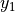
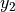

Panel Connections (compmech.panel.connections)¶
Connection between panel domains. Each panel domain has its own set of Bardell approximation functions. Below it is shown the connections currently supported.
kCBFycte¶
Connection of type:
_
|
|| --> Flange |
|| |-> Can be used to model a stiffener
====== --> Base |
_|
ycte indicates the connection exists at a constant  for panel 1
(base) and  for panel 2 (flange).
kCSB¶
Connection of type:
====== ==> base
------ --> skin
Takes into account the offset between the two mid-surfaces.
kCSSxcte¶
Connection of type:
__________
| |
| | /^\ x2
| S2 | |
| | y2 |
| | <----
|________| (connection at x2=xcte2)
__________ (connection at x1=xcte1)
| |
| | /^\ x1
| S1 | |
| | y1 |
|________| <----
kCSSycte¶
Connection of type:
/-> (connection at y1=ycte1)
/
/ /->(connection at y2=ycte2)
_________| |_________
| | | |
| | | |
| S1 | | S2 |
| | | |
|________| |________|
/^\ x1 /^\ x2
| |
y1 | y2 |
<---- <----
Calculating Penalty Constants¶
Function :func:’.calc_kt_kr’ is based on Ref [castro2017AssemblyModels] and
uses a strain compatibility criterion to calculate penalty constants for
translation (kt) and rotatio (kr). The aim is to have penalty constants
that are just high enough to produce the desired compatibility, but not too
high such that numerical stability issues start to appear.
-
compmech.panel.connections.calc_kt_kr(p1, p2, connection_type)[source]¶ Calculate translation and rotation penalty constants
For details on how to derive these equations, see [castro2017AssemblyModels].